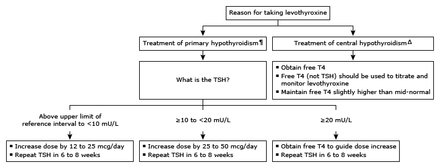

T4: thyroxine; TSH: thyroid-stimulating hormone.
* The normal range for TSH in nonpregnant adults is approximately 0.5 to 4.5 mU/L. The normal range for free T4 is shifted slightly to higher values in patients taking levothyroxine. Interpretation of a specific abnormal test result should be based upon the reference range reported with that result.
¶ Assumes adherence to medication regimen and that the most recent dose adjustment was at least 4 to 6 weeks prior.
Δ In central hypothyroidism, serum TSH levels are typically low or inappropriately normal, but TSH may be slightly elevated due, in part, to the secretion of TSH that has reduced biologic activity but normal immunoactivity.